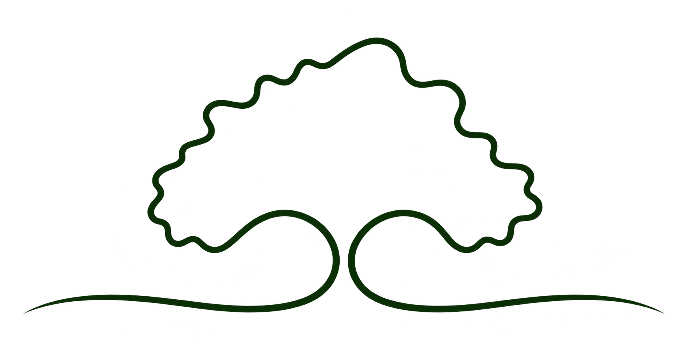
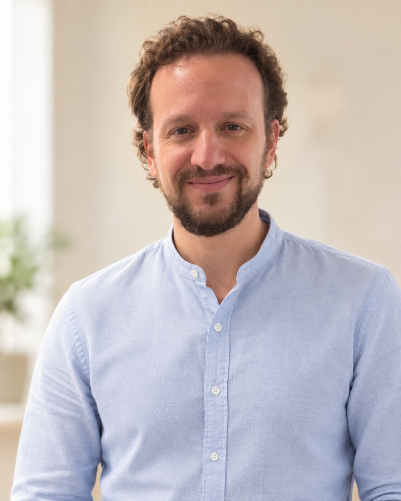

Sono Giulio Rocchi, medico chirurgo specialista in Psichiatria, laureato e specializzato presso l’Università degli Studi di Genova.
Nel corso del mio percorso professionale ho maturato esperienza nella psichiatria ospedaliera e territoriale, nel Servizio Psichiatrico di Diagnosi e Cura e in Pronto Soccorso. Ho inoltre ricoperto incarichi di Direzione Sanitaria in servizi dedicati alla salute mentale e alle dipendenze.
Affianco all’attività clinica l’interesse per la ricerca neuroscientifica e per lo studio dei meccanismi biologici coinvolti nei disturbi mentali. Sono coautore del volume A Working Model of Affectivity, dedicato ai circuiti neurali dell’affettività, al temperamento e ai disturbi affettivi, e di pubblicazioni scientifiche internazionali in ambito psichiatrico e neuroscientifico.
Sono Dirigente Medico presso l’ASL di Alessandria e lavoro presso il reparto di Psichiatria dell’Ospedale San Giacomo di Novi Ligure.
Parallelamente all’attività ospedaliera ricevo privatamente a Genova e Novi Ligure e svolgo consulenze psichiatriche anche online.
Nel mio lavoro pongo al centro l’ascolto e la personalizzazione del percorso di cura, integrando il rigore clinico e scientifico con l’attenzione alla dimensione simbolica e alla psicologia analitica di orientamento junghiano.

Nel mio lavoro clinico integro la valutazione psichiatrica e l’attenzione alle evidenze scientifiche con alcuni riferimenti alla psicologia analitica di Carl Gustav Jung. Questo orientamento aiuta a non considerare la persona soltanto attraverso i sintomi o la diagnosi, ma a comprenderne la storia, le relazioni, le risorse e le difficoltà nel loro insieme.
L’obiettivo è costruire un percorso di cura che favorisca una maggiore consapevolezza di sé, strumenti più efficaci per affrontare i momenti di difficoltà e un miglior equilibrio nella vita quotidiana.